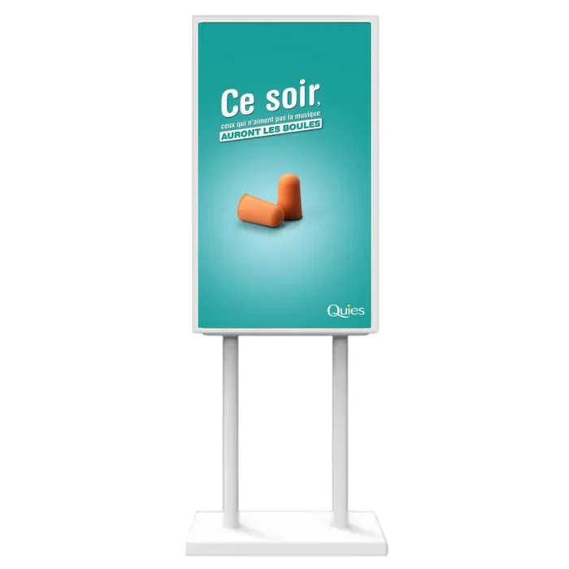

Écran et panneau d'affichage pour caves, vignerons et caveaux
Le Roussillon vit d'un vignoble et d'un flux de visiteurs qui, l'essentiel du temps, passent devant un caveau sans savoir qu'il est ouvert. C'est un problème d'affichage avant d'être un problème de vin.

Le problème n'est pas la notoriété, c'est les cinquante derniers mètres
Un domaine travaille sa réputation sur des années : concours, guides, salons, clients fidèles. Et le samedi après-midi, une voiture passe à soixante à l'heure devant l'entrée, ne voit qu'un panneau de bois délavé, et ne s'arrête pas. Le visiteur n'a pas refusé d'entrer : il n'a pas vu qu'il pouvait.
Dans ce métier, l'affichage ne sert pas à faire connaître le domaine. Il sert à convertir un passage en arrêt, sur une distance de cinquante mètres et en trois secondes. C'est un exercice très différent, et c'est celui qu'un panneau statique fait mal.
Ce que la loi Évin permet réellement
C'est la première question, et beaucoup de domaines renoncent à communiquer par prudence, souvent au-delà de ce que la règle impose.
L'article L3323-4 du code de la santé publique fixe une liste de ce qu'une publicité pour une boisson alcoolique peut contenir. Elle est plus large qu'on ne le croit : le degré, l'origine, la dénomination, la composition, le nom et l'adresse du producteur, le mode d'élaboration, les modalités de vente et de dégustation, les références au terroir et les distinctions obtenues. Le message sanitaire doit accompagner la communication.
Ce qui reste exclu, c'est le registre de l'ambiance : la convivialité, la fête, la séduction, la réussite. La ligne passe entre l'objectif et le suggestif.
Autrement dit, une médaille, un millésime, un cépage, une date de dégustation, un tarif au carton, une AOP : tout cela s'affiche. Nous construisons la boucle sur cette base et vous la validez avant diffusion. Vérifiez-la auprès de votre syndicat ou de votre conseil si un point vous semble limite : c'est votre responsabilité d'exploitant, et nous ne nous y substituons pas.
Le panneau en bord de route
C'est l'équipement qui change le plus de choses pour un domaine isolé. Un panneau LED extérieur, simple ou double face, fabriqué aux dimensions de l'emplacement, fonctionne de −30 °C à +50 °C et résiste à la tramontane comme aux étés de la plaine.
Il affiche ce qu'un panneau peint ne peut pas : ouvert aujourd'hui jusqu'à 19 h, la dégustation du week-end, le millésime qui vient de sortir, la médaille obtenue le mois dernier. Et il le change sans qu'on repeigne quoi que ce soit.
Attention à un point réglementaire distinct de la loi Évin : un dispositif visible depuis une voie publique relève de la réglementation sur les enseignes et la publicité, avec des règles particulières hors agglomération et en site protégé. Nous repérons l'emplacement avant de chiffrer et nous vous disons franchement si c'est jouable.
Dans le caveau, l'écran qui vend le carton
La dégustation fonctionne, le visiteur est convaincu, et il repart avec trois bouteilles. L'écart entre trois bouteilles et un carton se joue sur une information qui n'est presque jamais donnée au bon moment : le tarif dégressif, l'expédition, le prix au carton panaché.
Un écran intérieur, à partir de 49 € HT par mois, affiche cela en continu pendant que vous servez. Il montre aussi la carte du vignoble, les parcelles, le calendrier des travaux de la saison, les accords mets-vins — autant de choses que vous expliquez vingt fois par jour et qui préparent le terrain avant même que vous ouvriez la bouche.
Le calendrier d'un caveau du Roussillon
Ce métier a un rythme que peu de commerces connaissent, et c'est ce qui rend la programmation utile :
- Les vacances de Pâques et les ponts de mai, première vraie fréquentation
- L'été, où le flux est maximal mais le visiteur pressé
- Les vendanges, qui intéressent énormément les visiteurs
- Les portes ouvertes et les fêtes de terroir de l'automne
- Les fêtes de fin d'année, moment des coffrets et des commandes
- Les concours et médailles, qui tombent quand ils tombent
Tout cela se programme en début de saison, une fois, et se déclenche aux bonnes dates. Le reste de l'année, le panneau affiche les horaires et le fait que vous êtes ouvert : c'est déjà l'essentiel.
Le budget
Panneau LED extérieur en bord de route : sur devis, car il se fabrique aux dimensions de l'emplacement et de la distance de lecture. Totem à l'entrée du domaine : format portrait, autonome, sans perçage de façade. Écran intérieur dans le caveau : à partir de 49 € HT par mois. Écran haute luminosité derrière une vitre exposée : 139 € HT par mois en 32 ou 43 pouces sur 60 mois. Matériel, logiciel, première boucle de dix visuels, installation, formation et SAV compris.
Les questions propres aux caves et aux caveaux
La loi Évin m'autorise-t-elle à afficher mes vins sur un écran ?
Oui, dans un cadre précis. L'article L3323-4 du code de la santé publique liste ce qu'une publicité pour une boisson alcoolique peut contenir : le degré, l'origine, la dénomination, la composition, le nom et l'adresse du producteur, le mode d'élaboration, les modalités de vente et de dégustation, les références au terroir et les distinctions obtenues. Le message sanitaire doit accompagner la communication. En pratique, l'essentiel de ce qu'un vigneron a envie de dire figure dans cette liste.
Qu'est-ce qui est exclu, alors ?
Tout ce qui relève de l'ambiance plutôt que du produit : la convivialité, la fête, la réussite sociale, la séduction. La règle sépare l'objectif du suggestif. Concrètement, on ne met pas en scène des consommateurs ; les professionnels, eux, peuvent apparaître — un vigneron dans ses vignes reste possible. Nous construisons la boucle sur cette base et vous la validez avant diffusion : c'est vous le responsable de ce qui est publié, pas nous.
Nous ne sommes ouverts qu'une partie de l'année, est-ce rentable ?
Un caveau qui ouvre d'avril à octobre paie l'écran douze mois. C'est la vraie objection, et elle mérite une réponse chiffrée plutôt qu'un argument. Deux réponses : le panneau extérieur en bord de route travaille toute l'année, y compris fermé, pour annoncer les horaires et la reprise ; et sur cinq ans, un écran à 139 € HT par mois revient à moins qu'une campagne de panneaux routiers saisonniers renouvelée chaque printemps.
Peut-on afficher les prix ?
Oui, les modalités de vente font partie de ce qui est autorisé, et c'est ce que cherchent les visiteurs. Le tarif au carton, les conditions de dégustation, l'expédition : autant d'informations qui déclenchent l'arrêt. Elles se modifient en dix secondes quand un millésime est épuisé.
À voir aussi
Les métiers et les secteurs qui vivent du même flux de visiteurs.
Nous venons voir le caveau et la route
Le repérage est gratuit, et c'est lui qui détermine la taille. Un panneau mal dimensionné en bord de route ne se lit pas.
Demandez votre étude gratuite
Dites-nous où se trouve le caveau, à quelle distance de la route, et si l'ouverture est saisonnière. Ce sont ces trois points qui décident du matériel.
- Réponse sous 48 heures
- Nous venons voir votre devanture sur place
- Simulation de votre vitrine, sans engagement